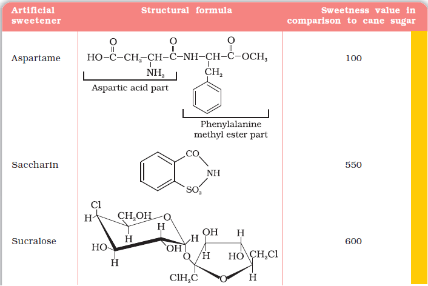
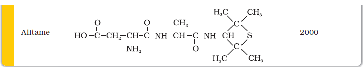

Chemicals are added to food for (i) their preservation, (ii) enhancing their appeal, and (iii) adding nutritive value in them. Main categories of food additives are as follows:
(i) Food colours (ii) Flavours and sweeteners (iii) Fat emulsifiers and stabilising agents (iv) Flour improvers - antistaling agents and bleaches (v) Antioxidants (vi) Preservatives (vii) Nutritional supplements such as minerals, vitamins and amino acids.Natural sweeteners, e.g., sucrose add to calorie intake and therefore many people prefer to use artificial sweeteners. Ortho-sulphobenzimide, also called saccharin, is the first popular artificial sweetening agent. It has been used as a sweetening agent ever since it was discovered in 1879. It is about 550 times as sweet as cane sugar. It is excreted from the body in urine unchanged. It appears to be entirely inert and harmless when taken. Its use is of great value to diabetic persons and people who need to control intake of calories. Some other commonly marketed artificial sweeteners are given in the table.


Aspartame is the most successful and widely used artificial sweetener. It is roughly 100 times as sweet as cane sugar. It is methyl ester of dipeptide formed from aspartic acid and phenylalanine. Use of aspartame is limited to cold foods and soft drinks because it is unstable at cooking temperature.
Food preservatives prevent spoilage of food due to microbial growth. The most commonly used preservatives include table salt, sugar, vegetable oils and sodium benzoate, C6H5COONa. Sodium benzoate is used in limited quantities and is metabolised in the body. Salts of sorbic acid and propanoic acid are also used as preservatives.